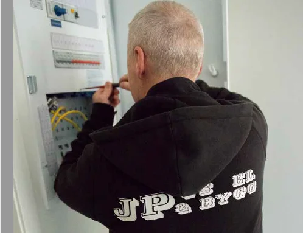

Elinstallationer
Egna elektriker för nyproduktion, ombyggnad och service. Både i våra byggprojekt och som fristående uppdrag.

El som en del av helheten.
Hos JP’s El & Bygg arbetar egna elektriker och elinstallatörer. Vi gör installationer i våra byggprojekt och tar också fristående eluppdrag.
Det innebär att du kan anlita oss både när ett nytt hus ska byggas och när en befintlig installation behöver service eller byggas ut.
Nyinstallation, service och utbyggnad.
- Eldragning vid nyproduktion
- Elinstallationer vid ombyggnad och renovering
- Service av befintliga elanläggningar
- Utbyggnad av befintliga installationer
Ring eller mejla och beskriv vad du behöver hjälp med. Då kan vi prata om förutsättningarna och hur vi går vidare.
Vad vill du bygga?
Berätta om din idé, så pratar vi om nästa steg.